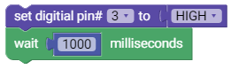
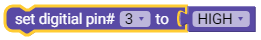

Misi 1
Membuat LED Menyala
Pengenalan
Tujuan
Membuat mobul LED dapat menyala dengan program yang dibuat.
Alat yang dibutuhkan
1. Sebuah Arduino
2. Sebuah Shield
3. Sebuah Modul LED
4. Sebuah Kabel
Langkah pertama (Kesepakatan):
Kita harus sepakati terlebih dahulu pin yang akan kita pakai pada arduino untuk misi kali ini adalah pin 3 (pin boleh pada nomer berapa saja asalkan yang dipilih adalah PIN DIGITAL)
Langkah kedua (Pemasangan Komponen):
1. Sambungkan Shield dengan Arduino
2. Sambungkan Kabel dengan modul LED
3. Sambungkan Kabel yang telah terhubung dengan modul LED dengan PIN 3 pada Shield yang telah terpasang di Arduino
Langkah 4 (Pemrograman)
Masukan kode program dibawah

Langkah 5 (Upload):
Agar coding dapat dijalankan oleh arduino, maka kita harus menguploadnya dengan cara :
1. Sambungkan arduino dengan komputer
2. Tekan tombol upload pada program
Program sudah terpasang pada arduino.
Keterangan :

Blok diatas digunakan untuk mengatur agar pin yang dipilih dialiri listrik atau tidak. "HIGH" untuk dialiri listrik, dan "LOW" untuk menghilangkan aliran listrik
Keterangan :
Blok diatas digunakan untuk mengatur waktu tunggu suatu proses. Satuan yang digunakan adalah millisecond.
NB : 1 second = 1000 milliseconds